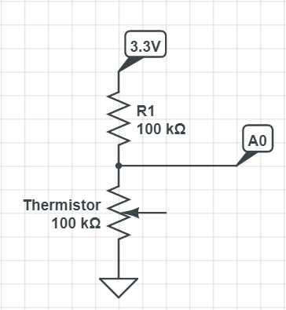
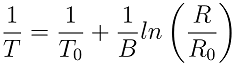

In this task - you will build a small circuit to measure the room temperature and report it back.
The circuit is a simple voltage divider between a known resistor and a thremistor (a component that changes its' resistance depending on temperature)
This is the circuit diagram:

And the formula to get the temperature:

simple function to calculate R (the thermistor resistance):
float getThermistorResistance(int resistor_value) {
// first - read the analog input to get the voltage across the thermistor
int a_read = analogRead(A0);
// analog input is 0-1023 where 1023==3.3V
float thermistor_voltage = (((float)a_read)/1023.0)*3.3;
// current across thermistor is the same as across the resistor,
// so calculate over the known resistor value
float thermistor_current = (3.3 - thermistor_voltage)/resistor_value;
// R = V/I
return (thermistor_voltage / thermistor_current);
}
and then to get the actual temperature:
int getTemperature(float thermistor_1divB, int thermistor_t0, int thermistor_r0, int resistor_value) {
float thermistor_resistance = getThermistorResistance(resistor_value);
// caluclate coefficient (1/b*ln(r/r0) - replace ln with log)
float coeff = thermistor_1divB * log(thermistor_resistance/thermistor_r0);
// calculate 1/t0+1/b*ln(r/r0)
coeff = (1.0/thermistor_t0) + coeff;
// invert the result since formula is for 1/t
float temp_kelvin = 1.0 / coeff;
// translate from Kelvin to Celsius
float temp = temp_kelvin - 273;
// round the temperature
return round(temp);
}
and a call to get the temperature should look like this:
// getTemperature(1/B, T0, R0, R1);
getTemperature(0.000253165, 293, 100000, 100000);
so to include the temperature into the JSON response we can modify our previous JSON function:
void sendJsonResponse(){
server.sendHeader("Access-Control-Allow-Origin", "*");
String message = "{\"name\":\"
message += "\"number\":
message += "\"temperature\":";
message += getTemperature(0.000253165, 293, 100000, 100000);
message += ",";
message += "\"time\":\"0:00\"}";
server.send(200, "application/json", message);
}
#include <ESP8266WiFi.h>
#include <ESP8266WebServer.h>
/*******************************
* defines and constants *
*******************************/
const char* ssid = "intel makers";
const char* password = "1234567890";
#define ONBOARD_LED_PIN D4
#define THERMISTOR_1_DIV_B (0.000253165)
#define THERMISTOR_T0 (293)
#define THERMISTOR_R0 (100000)
#define R1_VALUE (100000)
/*******************************
* Globals *
*******************************/
ESP8266WebServer server(80);
/*******************************
* service functions *
*******************************/
float getThermistorResistance(int resistor_value) {
// first - read the analog input to get the voltage across the thermistor
int a_read = analogRead(A0);
// analog input is 0-1023 where 1023==3.3V
float thermistor_voltage = (((float)a_read)/1023.0)*3.3;
// current across thermistor is the same as across the resistor,
// so calculate over the known resistor value
float thermistor_current = (3.3 - thermistor_voltage)/resistor_value;
// R = V/I
return (thermistor_voltage / thermistor_current);
}
int getTemperature(float thermistor_1divB, int thermistor_t0, int thermistor_r0, int resistor_value) {
float thermistor_resistance = getThermistorResistance(resistor_value);
// caluclate coefficient (1/b*ln(r/r0) - replace ln with log)
float coeff = thermistor_1divB * log(thermistor_resistance/thermistor_r0);
// calculate 1/t0+1/b*ln(r/r0)
coeff = (1.0/thermistor_t0) + coeff;
// invert the result since formula is for 1/t
float temp_kelvin = 1.0 / coeff;
// translate from Kelvin to Celsius
float temp = temp_kelvin - 273;
// round the temperature
return round(temp);
}
/*******************************
* server callbacks *
*******************************/
void handleRoot(){
server.send(200, "text/plain", "Hooray!, your ESP8266 server is alive!");
}
void handleNotFound(){
server.send(404, "text/plain", "Error 404 - ESP8266 server could not find the page you were looking for");
}
void sendJsonResponse(){
server.sendHeader("Access-Control-Allow-Origin", "*");
String message = "{\"name\":\"
message += "\"number\":
message += "\"temperature\":";
message += getTemperature(THERMISTOR_1_DIV_B, THERMISTOR_T0, THERMISTOR_R0, R1_VALUE);
message += ",";
message += "\"time\":\"0:00\"}";
server.send(200, "application/json", message);
}
/*******************************
* setup and loop *
*******************************/
void setup() {
// setup the on-board pin to output mode
pinMode(ONBOARD_LED_PIN, OUTPUT);
// start serial connection
Serial.begin(115200);
Serial.println("");
Serial.print("Connecting to ");
Serial.println(ssid);
// set WiFi to STA mode
WiFi.mode(WIFI_STA);
// set static IP
IPAddress ip(192,168,1,
IPAddress gateway(192,168,1,254);
IPAddress subnet(255,255,255,0);
WiFi.config(ip, gateway, subnet);
// connect to AP
WiFi.begin(ssid, password);
// wait until connection is complete
while (WiFi.status() != WL_CONNECTED) {
delay(500);
Serial.print(".");
}
Serial.println("");
Serial.println("WiFi connected");
Serial.println("IP address: ");
Serial.println(WiFi.localIP());
server.on("/", handleRoot);
server.on("/json", sendJsonResponse);
server.onNotFound(handleNotFound);
server.begin();
}
void loop()
{
// toggle the LED each 0.1 second
digitalWrite(ONBOARD_LED_PIN, HIGH);
delay(100);
digitalWrite(ONBOARD_LED_PIN, LOW);
delay(100);
server.handleClient();
}
192.168.1.
The response from the device should include the temperature.
You can try to hold the thermistor and refresh to watch the temperature change.
Click "Test me" when you are ready.